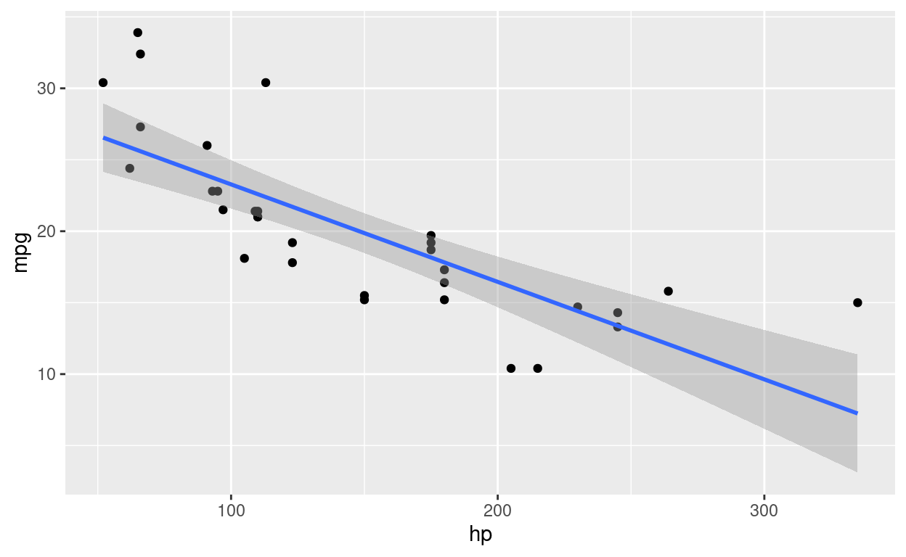

Description: Take the time to explore the lesser known functions and packages of the Tidyverse. Learn about how to access googlesheets, use times/dates, manipulate text, use functional programming to replace loops, and more.
Learning objectives
- What packages are in the tidyverse
- Understand functional programming
The tidyverse is an opinionated collection of R packages designed for data science. All packages share an underlying design philosophy, grammar, and data structures. - https://www.tidyverse.org
Core Tidyverse
── Attaching packages ───────────────────────────── tidyverse 1.3.1 ──✓ ggplot2 3.3.3 ✓ purrr 0.3.4
✓ tibble 3.1.2 ✓ dplyr 1.0.6
✓ tidyr 1.1.3 ✓ stringr 1.4.0
✓ readr 1.4.0 ✓ forcats 0.5.1── Conflicts ──────────────────────────────── tidyverse_conflicts() ──
x dplyr::filter() masks stats::filter()
x dplyr::lag() masks stats::lag()tibble

tibble::tribble is a useful function if you want to manually input a small amount of data.
tibble::tribble( ~column1, ~column2, ~column3,
"a", 1, TRUE,
"b", 2, FALSE)
# A tibble: 2 x 3
column1 column2 column3
<chr> <dbl> <lgl>
1 a 1 TRUE
2 b 2 FALSE tibble::glimpse is similar to str but can be embedded in pipelines as it invisibly returns the original data.
tibble::glimpse(mtcars)
Rows: 32
Columns: 11
$ mpg <dbl> 21.0, 21.0, 22.8, 21.4, 18.7, 18.1, 14.3, 24.4, 22.8, 1…
$ cyl <dbl> 6, 6, 4, 6, 8, 6, 8, 4, 4, 6, 6, 8, 8, 8, 8, 8, 8, 4, 4…
$ disp <dbl> 160.0, 160.0, 108.0, 258.0, 360.0, 225.0, 360.0, 146.7,…
$ hp <dbl> 110, 110, 93, 110, 175, 105, 245, 62, 95, 123, 123, 180…
$ drat <dbl> 3.90, 3.90, 3.85, 3.08, 3.15, 2.76, 3.21, 3.69, 3.92, 3…
$ wt <dbl> 2.620, 2.875, 2.320, 3.215, 3.440, 3.460, 3.570, 3.190,…
$ qsec <dbl> 16.46, 17.02, 18.61, 19.44, 17.02, 20.22, 15.84, 20.00,…
$ vs <dbl> 0, 0, 1, 1, 0, 1, 0, 1, 1, 1, 1, 0, 0, 0, 0, 0, 0, 1, 1…
$ am <dbl> 1, 1, 1, 0, 0, 0, 0, 0, 0, 0, 0, 0, 0, 0, 0, 0, 0, 1, 1…
$ gear <dbl> 4, 4, 4, 3, 3, 3, 3, 4, 4, 4, 4, 3, 3, 3, 3, 3, 3, 4, 4…
$ carb <dbl> 4, 4, 1, 1, 2, 1, 4, 2, 2, 4, 4, 3, 3, 3, 4, 4, 4, 1, 2…ggplot2

The majority of ggplot2 functions are specific to the type of visualisation that is being created and well covered by the cheatsheet. There are two however that can be very helpful to know about.
ggplot2::theme_set allows you to apply a theme to all of your ggplots. It would usually be called near the start of a script.
ggplot2::ggplot_build is the function that allows you pull out the data that is being used to create a plot. Each component of a ggplot is stored as an element of a list and
p <- ggplot(data = mtcars, aes(x = hp, y = mpg)) + geom_point() + geom_smooth(method = 'lm')
plot(p)

names(ggplot2::ggplot_build(p))
[1] "data" "layout" "plot" (ggplot2::ggplot_build(p)[["data"]])
[[1]]
x y PANEL group shape colour size fill alpha stroke
1 110 21.0 1 -1 19 black 1.5 NA NA 0.5
2 110 21.0 1 -1 19 black 1.5 NA NA 0.5
3 93 22.8 1 -1 19 black 1.5 NA NA 0.5
4 110 21.4 1 -1 19 black 1.5 NA NA 0.5
5 175 18.7 1 -1 19 black 1.5 NA NA 0.5
6 105 18.1 1 -1 19 black 1.5 NA NA 0.5
7 245 14.3 1 -1 19 black 1.5 NA NA 0.5
8 62 24.4 1 -1 19 black 1.5 NA NA 0.5
9 95 22.8 1 -1 19 black 1.5 NA NA 0.5
10 123 19.2 1 -1 19 black 1.5 NA NA 0.5
11 123 17.8 1 -1 19 black 1.5 NA NA 0.5
12 180 16.4 1 -1 19 black 1.5 NA NA 0.5
13 180 17.3 1 -1 19 black 1.5 NA NA 0.5
14 180 15.2 1 -1 19 black 1.5 NA NA 0.5
15 205 10.4 1 -1 19 black 1.5 NA NA 0.5
16 215 10.4 1 -1 19 black 1.5 NA NA 0.5
17 230 14.7 1 -1 19 black 1.5 NA NA 0.5
18 66 32.4 1 -1 19 black 1.5 NA NA 0.5
19 52 30.4 1 -1 19 black 1.5 NA NA 0.5
20 65 33.9 1 -1 19 black 1.5 NA NA 0.5
21 97 21.5 1 -1 19 black 1.5 NA NA 0.5
22 150 15.5 1 -1 19 black 1.5 NA NA 0.5
23 150 15.2 1 -1 19 black 1.5 NA NA 0.5
24 245 13.3 1 -1 19 black 1.5 NA NA 0.5
25 175 19.2 1 -1 19 black 1.5 NA NA 0.5
26 66 27.3 1 -1 19 black 1.5 NA NA 0.5
27 91 26.0 1 -1 19 black 1.5 NA NA 0.5
28 113 30.4 1 -1 19 black 1.5 NA NA 0.5
29 264 15.8 1 -1 19 black 1.5 NA NA 0.5
30 175 19.7 1 -1 19 black 1.5 NA NA 0.5
31 335 15.0 1 -1 19 black 1.5 NA NA 0.5
32 109 21.4 1 -1 19 black 1.5 NA NA 0.5
[[2]]
x y ymin ymax se flipped_aes PANEL
1 52.00000 26.550990 24.148024 28.95396 1.1766139 FALSE 1
2 55.58228 26.306577 23.963506 28.64965 1.1472866 FALSE 1
3 59.16456 26.062165 23.778158 28.34617 1.1183653 FALSE 1
4 62.74684 25.817752 23.591915 28.04359 1.0898824 FALSE 1
5 66.32911 25.573339 23.404705 27.74197 1.0618730 FALSE 1
6 69.91139 25.328927 23.216449 27.44140 1.0343758 FALSE 1
7 73.49367 25.084514 23.027062 27.14197 1.0074325 FALSE 1
8 77.07595 24.840101 22.836450 26.84375 0.9810890 FALSE 1
9 80.65823 24.595689 22.644512 26.54686 0.9553946 FALSE 1
10 84.24051 24.351276 22.451139 26.25141 0.9304034 FALSE 1
11 87.82278 24.106863 22.256210 25.95752 0.9061733 FALSE 1
12 91.40506 23.862450 22.059599 25.66530 0.8827672 FALSE 1
13 94.98734 23.618038 21.861168 25.37491 0.8602522 FALSE 1
14 98.56962 23.373625 21.660771 25.08648 0.8387002 FALSE 1
15 102.15190 23.129212 21.458251 24.80017 0.8181871 FALSE 1
16 105.73418 22.884800 21.253446 24.51615 0.7987932 FALSE 1
17 109.31646 22.640387 21.046185 24.23459 0.7806018 FALSE 1
18 112.89873 22.395974 20.836293 23.95566 0.7636988 FALSE 1
19 116.48101 22.151562 20.623591 23.67953 0.7481716 FALSE 1
20 120.06329 21.907149 20.407902 23.40640 0.7341074 FALSE 1
21 123.64557 21.662736 20.189049 23.13642 0.7215919 FALSE 1
22 127.22785 21.418324 19.966867 22.86978 0.7107068 FALSE 1
23 130.81013 21.173911 19.741199 22.60662 0.7015281 FALSE 1
24 134.39241 20.929498 19.511909 22.34709 0.6941233 FALSE 1
25 137.97468 20.685085 19.278879 22.09129 0.6885499 FALSE 1
26 141.55696 20.440673 19.042018 21.83933 0.6848524 FALSE 1
27 145.13924 20.196260 18.801263 21.59126 0.6830614 FALSE 1
28 148.72152 19.951847 18.556584 21.34711 0.6831918 FALSE 1
29 152.30380 19.707435 18.307983 21.10689 0.6852426 FALSE 1
30 155.88608 19.463022 18.055495 20.87055 0.6891966 FALSE 1
31 159.46835 19.218609 17.799187 20.63803 0.6950212 FALSE 1
32 163.05063 18.974197 17.539153 20.40924 0.7026701 FALSE 1
33 166.63291 18.729784 17.275513 20.18405 0.7120844 FALSE 1
34 170.21519 18.485371 17.008410 19.96233 0.7231952 FALSE 1
35 173.79747 18.240959 16.737998 19.74392 0.7359256 FALSE 1
36 177.37975 17.996546 16.464447 19.52864 0.7501933 FALSE 1
37 180.96203 17.752133 16.187932 19.31633 0.7659122 FALSE 1
38 184.54430 17.507720 15.908631 19.10681 0.7829950 FALSE 1
39 188.12658 17.263308 15.626724 18.89989 0.8013545 FALSE 1
40 191.70886 17.018895 15.342384 18.69541 0.8209050 FALSE 1
41 195.29114 16.774482 15.055780 18.49318 0.8415635 FALSE 1
42 198.87342 16.530070 14.767077 18.29306 0.8632505 FALSE 1
43 202.45570 16.285657 14.476427 18.09489 0.8858904 FALSE 1
44 206.03797 16.041244 14.183977 17.89851 0.9094121 FALSE 1
45 209.62025 15.796832 13.889862 17.70380 0.9337489 FALSE 1
46 213.20253 15.552419 13.594209 17.51063 0.9588388 FALSE 1
47 216.78481 15.308006 13.297135 17.31888 0.9846243 FALSE 1
48 220.36709 15.063594 12.998750 17.12844 1.0110520 FALSE 1
49 223.94937 14.819181 12.699153 16.93921 1.0380729 FALSE 1
50 227.53165 14.574768 12.398437 16.75110 1.0656420 FALSE 1
51 231.11392 14.330355 12.096686 16.56403 1.0937177 FALSE 1
52 234.69620 14.085943 11.793978 16.37791 1.1222621 FALSE 1
53 238.27848 13.841530 11.490384 16.19268 1.1512403 FALSE 1
54 241.86076 13.597117 11.185969 16.00827 1.1806203 FALSE 1
55 245.44304 13.352705 10.880794 15.82462 1.2103728 FALSE 1
56 249.02532 13.108292 10.574912 15.64167 1.2404712 FALSE 1
57 252.60759 12.863879 10.268374 15.45938 1.2708907 FALSE 1
58 256.18987 12.619467 9.961226 15.27771 1.3016090 FALSE 1
59 259.77215 12.375054 9.653511 15.09660 1.3326052 FALSE 1
60 263.35443 12.130641 9.345266 14.91602 1.3638606 FALSE 1
61 266.93671 11.886229 9.036528 14.73593 1.3953576 FALSE 1
62 270.51899 11.641816 8.727329 14.55630 1.4270803 FALSE 1
63 274.10127 11.397403 8.417699 14.37711 1.4590139 FALSE 1
64 277.68354 11.152990 8.107666 14.19831 1.4911449 FALSE 1
65 281.26582 10.908578 7.797256 14.01990 1.5234608 FALSE 1
66 284.84810 10.664165 7.486491 13.84184 1.5559500 FALSE 1
67 288.43038 10.419752 7.175394 13.66411 1.5886021 FALSE 1
68 292.01266 10.175340 6.863985 13.48669 1.6214070 FALSE 1
69 295.59494 9.930927 6.552282 13.30957 1.6543558 FALSE 1
70 299.17722 9.686514 6.240302 13.13273 1.6874399 FALSE 1
71 302.75949 9.442102 5.928062 12.95614 1.7206516 FALSE 1
72 306.34177 9.197689 5.615576 12.77980 1.7539837 FALSE 1
73 309.92405 8.953276 5.302859 12.60369 1.7874293 FALSE 1
74 313.50633 8.708864 4.989921 12.42781 1.8209823 FALSE 1
75 317.08861 8.464451 4.676777 12.25212 1.8546368 FALSE 1
76 320.67089 8.220038 4.363436 12.07664 1.8883875 FALSE 1
77 324.25316 7.975625 4.049910 11.90134 1.9222291 FALSE 1
78 327.83544 7.731213 3.736207 11.72622 1.9561570 FALSE 1
79 331.41772 7.486800 3.422337 11.55126 1.9901668 FALSE 1
80 335.00000 7.242387 3.108308 11.37647 2.0242544 FALSE 1
group colour fill size linetype weight alpha
1 -1 #3366FF grey60 1 1 1 0.4
2 -1 #3366FF grey60 1 1 1 0.4
3 -1 #3366FF grey60 1 1 1 0.4
4 -1 #3366FF grey60 1 1 1 0.4
5 -1 #3366FF grey60 1 1 1 0.4
6 -1 #3366FF grey60 1 1 1 0.4
7 -1 #3366FF grey60 1 1 1 0.4
8 -1 #3366FF grey60 1 1 1 0.4
9 -1 #3366FF grey60 1 1 1 0.4
10 -1 #3366FF grey60 1 1 1 0.4
11 -1 #3366FF grey60 1 1 1 0.4
12 -1 #3366FF grey60 1 1 1 0.4
13 -1 #3366FF grey60 1 1 1 0.4
14 -1 #3366FF grey60 1 1 1 0.4
15 -1 #3366FF grey60 1 1 1 0.4
16 -1 #3366FF grey60 1 1 1 0.4
17 -1 #3366FF grey60 1 1 1 0.4
18 -1 #3366FF grey60 1 1 1 0.4
19 -1 #3366FF grey60 1 1 1 0.4
20 -1 #3366FF grey60 1 1 1 0.4
21 -1 #3366FF grey60 1 1 1 0.4
22 -1 #3366FF grey60 1 1 1 0.4
23 -1 #3366FF grey60 1 1 1 0.4
24 -1 #3366FF grey60 1 1 1 0.4
25 -1 #3366FF grey60 1 1 1 0.4
26 -1 #3366FF grey60 1 1 1 0.4
27 -1 #3366FF grey60 1 1 1 0.4
28 -1 #3366FF grey60 1 1 1 0.4
29 -1 #3366FF grey60 1 1 1 0.4
30 -1 #3366FF grey60 1 1 1 0.4
31 -1 #3366FF grey60 1 1 1 0.4
32 -1 #3366FF grey60 1 1 1 0.4
33 -1 #3366FF grey60 1 1 1 0.4
34 -1 #3366FF grey60 1 1 1 0.4
35 -1 #3366FF grey60 1 1 1 0.4
36 -1 #3366FF grey60 1 1 1 0.4
37 -1 #3366FF grey60 1 1 1 0.4
38 -1 #3366FF grey60 1 1 1 0.4
39 -1 #3366FF grey60 1 1 1 0.4
40 -1 #3366FF grey60 1 1 1 0.4
41 -1 #3366FF grey60 1 1 1 0.4
42 -1 #3366FF grey60 1 1 1 0.4
43 -1 #3366FF grey60 1 1 1 0.4
44 -1 #3366FF grey60 1 1 1 0.4
45 -1 #3366FF grey60 1 1 1 0.4
46 -1 #3366FF grey60 1 1 1 0.4
47 -1 #3366FF grey60 1 1 1 0.4
48 -1 #3366FF grey60 1 1 1 0.4
49 -1 #3366FF grey60 1 1 1 0.4
50 -1 #3366FF grey60 1 1 1 0.4
51 -1 #3366FF grey60 1 1 1 0.4
52 -1 #3366FF grey60 1 1 1 0.4
53 -1 #3366FF grey60 1 1 1 0.4
54 -1 #3366FF grey60 1 1 1 0.4
55 -1 #3366FF grey60 1 1 1 0.4
56 -1 #3366FF grey60 1 1 1 0.4
57 -1 #3366FF grey60 1 1 1 0.4
58 -1 #3366FF grey60 1 1 1 0.4
59 -1 #3366FF grey60 1 1 1 0.4
60 -1 #3366FF grey60 1 1 1 0.4
61 -1 #3366FF grey60 1 1 1 0.4
62 -1 #3366FF grey60 1 1 1 0.4
63 -1 #3366FF grey60 1 1 1 0.4
64 -1 #3366FF grey60 1 1 1 0.4
65 -1 #3366FF grey60 1 1 1 0.4
66 -1 #3366FF grey60 1 1 1 0.4
67 -1 #3366FF grey60 1 1 1 0.4
68 -1 #3366FF grey60 1 1 1 0.4
69 -1 #3366FF grey60 1 1 1 0.4
70 -1 #3366FF grey60 1 1 1 0.4
71 -1 #3366FF grey60 1 1 1 0.4
72 -1 #3366FF grey60 1 1 1 0.4
73 -1 #3366FF grey60 1 1 1 0.4
74 -1 #3366FF grey60 1 1 1 0.4
75 -1 #3366FF grey60 1 1 1 0.4
76 -1 #3366FF grey60 1 1 1 0.4
77 -1 #3366FF grey60 1 1 1 0.4
78 -1 #3366FF grey60 1 1 1 0.4
79 -1 #3366FF grey60 1 1 1 0.4
80 -1 #3366FF grey60 1 1 1 0.4dplyr

dplyr::transmutedplyr::relocatedplyr::acrossdplyr::starts_with/dplyr::contains/dplyr::ends_withdplyr::case_when
tidyr

tidyr::nesttidyr::unnesttidyr::separate/tidyr::separate_rowstidyr::unitetidyr::crossingtidyr::drop_natidyr::replace_na
forcats

-forcats::relevel - forcats::reorder - forcats::recode
stringr

stringr::str_removestringr::extract
readr

readr::read_csv_chunkedreadr::parse_number
purrr

purrr::mappurrr::walkpurrr::transposepurrr::keep/purrr::discard/purrr::pluck
Extra Tidyverse
- readxl
- googlesheets4
- lubridate
lubridate::ymd
- hms
- magrittr
magrittr::%$%magrittr::%T%
- glue
glue::glue
- dtplyr
- dbplyr